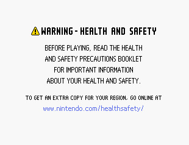

Laboratory 03
Main scenario story (Context)

There are reports of increases in injuries related to playing games consoles. These injuries were attributed mainly to muscle and tendon strains. A researcher collected data from 120 participants who played on a Nintendo Switch or watched others playing. The outcome was a pain score from 0 to 10, where 0 is no pain and 10 is severe pain. The data are in switch.sav.
Main scenario quests (Objectives)
- Describe the distribution of the pain scores. Do you think the one-sample \(𝑡\) test is suitable for this variable?
- A pain score of 2 is considered as minor pain. Test whether the mean pain score is equal to 2 (two tailed, 5% level) and obtain the corresponding effect size.
- Obtain a 95% confidence interval for the mean pain score.
- Summary your findings from the previous questions in several sentences.
- (Extra credit) Obtain a 95% confidence interval for the mean pain score of those who played on a Nintendo Switch. That is, exclude those who only watched others playing. (Hint: You learned how to exclude cases in Laboratory Assignment 1.)
Solutions
A peek on the dataset
As usual, I load modules that I may need in this laboratory assignment, then the dataset to my RAM and check attributes of the given dataset.
# Descriptions
print(f'Shape: \n', switch.shape, '\n')
print(f'Columns: \n', switch.columns, '\n')
print(f'First 5 rows: \n', switch.head(5), '\n')
print(f'Describe the column `injury`: \n', switch.describe(), '\n')Shape:
(120, 5)
Columns:
Index(['id', 'athlete', 'stretch', 'switch', 'injury'], dtype='object')
First 5 rows:
id athlete stretch switch injury
0 ytv Athlete Stretching Playing switch 2.0
1 wel Athlete Stretching Playing switch 2.0
2 qfs Athlete Stretching Playing switch 1.0
3 oln Athlete Stretching Playing switch 2.0
4 wxi Athlete Stretching Playing switch 0.0
Describe the column `injury`:
injury
count 120.000000
mean 2.891667
std 1.994934
min 0.000000
25% 2.000000
50% 2.000000
75% 4.000000
max 10.000000
Q1: Distribution of the pain scores
Q1a: Describe the distribution
Answer
To describe the distribution of the pain scores, I use histogram with a kernel density estimation curve as shown in Figure 1 as well as measurements (mean, mode and median) reflect central tendency (see Table 1).
| Measurement | Value |
|---|---|
| Mode | 2.00 |
| Mean | 2.89 |
| Median | 2.00 |
According to the graph:
- Most of the observations are clustered around the lower pain scores (between 1 and 4), we can say that the distribution of pain scores is positively skewed rather than a perfect normal distribution.
- There is a noticeable peak at a score of 2, which means the most frequent score is around 2.
- A long tail extends to the higher scores, indicating the frequency of pain scores gradually decreases as the scores increase.
Solution
injury = switch['injury']
# Calculate measurements of central tendency
injury_mean = injury.mean()
injury_mode = injury.mode()[0]
injury_median = injury.median()
# Tell the result
print(f'Central Tendency: \n')
print(f'Mean: ', injury_mean)
print(f'Mode: ', injury_mode)
print(f'Median: ', injury_median)Central Tendency:
Mean: 2.8916666666666666
Mode: 2.0
Median: 2.0import matplotlib.pyplot as plt
import seaborn as sns
# Plot the histogram
injury_hist = sns.histplot(switch, x='injury', stat='count', bins=10 ,kde=True)
# Dashed line for Mean, Median and Mode
injury_hist.axvline(injury_mean, color='blue', linestyle='--', linewidth=1)
injury_hist.axvline(injury_median, color='red', linestyle='--', linewidth=1)
# Set title and labels
injury_hist.set_title('Distribution of the pain scores')
injury_hist.set_xlabel('Pain score (out of 10)')
# Show the plot
plt.show()Q1b: One-sample \(𝑡\) test on this variable
Answer
Recall back the the slides in the lecture notes:
One‐sample \(t\) test requires that:
- Sample mean describes central tendency.
The sample mean is slightly higher than the mode and median (see Table 1 and Figure 1, red dashed lines for the median and mode, blue for the mean) since the data is right-skewed. However, they are fairly close to each other, so the sample mean can still represent central tendency.
- Scores in the sample are randomly selected from the population
According to the description, the data was “collected from 120 participants who played on a Nintendo Switch or watched others playing.” For the sake of this assignment, I will assume that the participants were randomly selected from patients worldwide to fulfill the random sampling assumption.
- Either \(N\) is large or \(X\) follows a normal distribution
Given the right-skewed distribution as seen in Figure 1, the data may violate the assumption of normality required for the one-sample \(t\)-test. However, the Central Limit Theorem suggests that if the sample size is large (typically \(N > 30\)), the sampling distribution of the sample mean tends to approach normality. Therefore, despite the skewed distribution, the sample size (\(N = 120\)) makes the one-sample \(t\)-test acceptable in this case.
Additionally, question 2 specifically asks for a one-sample \(t\)-test without requiring further preprocessing of data (e.g., a log transformation), which further supports the applicability of the one-sample \(t\)-test to this data. If the data were unusable, there would be no reason to include the following questions.
In conclusion, a one-sample \(t\)-test is suitable for this dataset.
Q2: Mean of pain score tested
Answer
\(p\) value
\(p \approx 3.11 \times 10^{-6}\)
At a 5% significance level (\(\alpha = 0.05\)), \(p < 0.001\), we reject the null hypothesis. The mean pain score is significantly different from 2 (a minor pain) at the 5% level.
The Cohen’s \(d\) value
\(d \approx 0.45\)
The Cohen’s \(d\) value indicates a medium effect. This suggests that the difference between the mean pain score (\(M = 2.89\)) and the a minor pain (\(\mu_{hyp} = 2\)) is meaningful in practical terms.
Solution
Given \(N = 120\), \(M \approx 2.89\), \(SD \approx 1.99\), \(\mu_{hyp} = 2\), the standard error \(SE_M\) is:
\[ SE_M = \frac{SD}{\sqrt{N}} \approx 0.18 \]
from math import sqrt
# Standard Error Mean
# Note: I can use injury.sem() directly to get the result,
# but I shall calculate by my own for this assignment.
injury_sem = injury.std(ddof=1) / sqrt(120)
print(f'Standard Error Mean: ', injury_sem)Standard Error Mean: 0.1821117309227567With \(SE_M \approx 0.18\), the \(t\) ratio is:
\[ t = \frac{M - \mu_{hyp}}{SE_{M}} \approx 4.90 \]
t: 4.8962615540943375Unfortunately, I can’t calculate the \(p\)-value on hand, so in this part I’ll call scipy.stats.t for help. the degree of freedom (\(df\)) is:
\[ df = N - 1 = 120 - 1 = 119 \]
With \(t \approx 4.90\) and \(df = 119\), then use survivor function to reach the \(p\)-value: \[ p \approx 3.11 \times 10^{-6} \]
import scipy.stats as stats
# 119 is the degree of freedom; Two-sided times two
injury_p = stats.t.sf(injury_t, 119 ) * 2
print(f'p: ', injury_p)p: 3.1051091723547962e-06The \(p\)-value is much smaller than 0.001 (\(p < 0.001\)), the null hypothesis should be rejected.
I also did a sanity check with the ready-to-use function scipy.stats.ttest_1samp:
# A san-check on my calculation result:
injury_ttest_1samp = stats.ttest_1samp(injury, 2, alternative='two-sided')
print(f't: ', injury_ttest_1samp.statistic, '\n'
'df: ', injury_ttest_1samp.df, '\n'
'p-value: ', injury_ttest_1samp.pvalue)t: 4.8962615540943375
df: 119
p-value: 3.1051091723547962e-06The Cohen’s d value is:
\[ d = \frac{M - \mu_{hyp}}{SD} = \frac{t}{\sqrt{N}} \approx 0.45 \]
Q3: 95% confidence interval for the mean pain score:
Answer
Based on the sample of \(N = 120\) pain scores, with \(M \approx 2.89\) and \(SD \approx 1.99\), the 95% CI for pain scores is \([2.53, 3.25]\).
Solution
Given \(c = 1.96\) for a 95% confidence interval and \(SE_M \approx 0.18\) as calculated in the last section, a 95% confidence interval of the mean pain score is:
\[ [M - c \times SE_M, M + c \times SE_M] \approx [2.53, 3.25] \]
# CI for two-tailed t-statistics
def confidence_interval(alpha, mean, sem, df):
c = stats.t.interval(1 - alpha, df)[1]
ci_upper = mean + (c * sem)
ci_lower = mean - (c * sem)
print(f'CI (Lower): ', ci_lower)
print(f'CI (Upper): ', ci_upper)
return str(f'[{ci_lower}, {ci_upper}]')
injury_ci = confidence_interval(0.05, injury_mean, injury_sem, 119)
print(injury_ci)CI (Lower): 2.53106725077079
CI (Upper): 3.252266082562543
[2.53106725077079, 3.252266082562543]Q4: Summarizing the findings
Answer
A one‐sample \(t\)-test is conducted to reveal whether mean pain score for a sample of \(N = 120\) patients differed from the minor pain with a score of 2. For this example, \(M = 2.89\), \(SD = 1.99\) and \(SE_M = 0.18\). The 95% CI for \(M\) was \([2.53, 3.25]\). The result was \(t(119) = 4.90\), \(p = 3.11 \times 10^-6\), two tailed. The effect size is \(d = 0.45\) by Cohen’s standards, which represents a medium effect. The difference between the sample mean (\(M = 2.89\)) and the score of minor pain (2) is statistically significant using \(\alpha = 0.05\), two tailed.
Q5: 95% confidence interval for Switch players
Answer
The 95% confidence interval for the mean pain score of those who played on a Nintendo Switch is \([3.14, 4.33]\).
Solution
- Check the structure of column
switchthen apply the filtering:
# Check how many people get injured while playing
print(f'Variables in the column switch: \n', switch['switch'].value_counts())
# Filter out all switch players
injury_ns = switch[switch['switch'] == 'Playing switch']['injury']
# And a sanity check
print(f'Filtered data: \n', injury_ns.describe())Variables in the column switch:
switch
Playing switch 60
Watching switch 60
Name: count, dtype: int64
Filtered data:
count 60.000000
mean 3.733333
std 2.313312
min 0.000000
25% 2.000000
50% 3.500000
75% 5.000000
max 10.000000
Name: injury, dtype: float64- Calculating the CI:
Given \(N_{player} = 60\), then the \(df_{player} = N_{player} - 1 = 59\),
Based on the data we also have \(M_{player} \approx 3.73\) and \(SE_{M_{player}} \approx 0.30\)
The 95% confidence interval for the mean pain score of those who played on a Nintendo Switch is:
\[ [M - c \times SE_M, M + c \times SE_M] \approx [3.14, 4.33] \]
injury_ns_mean = injury_ns.mean()
injury_ns_sem = injury_ns.sem()
injury_ns_dregf = len(injury_ns) - 1
print(f'Sample size: {len(injury_ns)}, \n'
f'Degree of Freedom: {injury_ns_dregf},\n'
f'Mean: {injury_ns_mean},\n'
f'Standard Error: {injury_ns_sem}')
injury_ns_ci = confidence_interval(0.05, injury_ns_mean, injury_ns_sem, injury_ns_dregf)
print(f'\nThe 95% CI for Switch players: \n', injury_ns_ci)Sample size: 60,
Degree of Freedom: 59,
Mean: 3.7333333333333334,
Standard Error: 0.29864729557842784
CI (Lower): 3.1357414752023387
CI (Upper): 4.3309251914643285
The 95% CI for Switch players:
[3.1357414752023387, 4.3309251914643285]